HealthDM — User Guide
SOC health diagnostics for Cortex Platform — run assessments, analyze policies, generate reports, and configure your workspace.
Open in browser at http://localhost:88001. Getting started
HealthDM runs entirely in your browser. Open http://localhost:8800 (or the host/port your Docker stack maps to nginx). The app redirects you straight to the Cortex Platform page on first load.
Before you run your first assessment, go to Settings → Cortex Platform Credentials and enter your API URL, API Key, and Auth ID. Without these the health checks return no live data.
The five main areas of the app are:
| Area | What it does |
|---|---|
| Dashboard | At-a-glance health score, top failures, and trends over time. |
| Cortex Platform | Run assessments, browse 14 check categories, filter and export results. |
| Policies & Profiles | Import Cortex .export bundles and compare them against baselines. |
| Comprehensive Report | Export a combined health + policy document in HTML, DOCX, XLSX, or PDF. |
| Settings | Credentials, report metadata, baselines, and per-check test configuration. |
2. Navigation & layout
A persistent left sidebar is always visible. It groups every section under labelled headings: Overview, Health Assessment, Analyze, Reports, and Workspace. The currently active page is highlighted.
The theme switcher lives at the very bottom of the sidebar — three buttons labelled Dark Light Mono. Use it at any time; the choice persists across page loads.
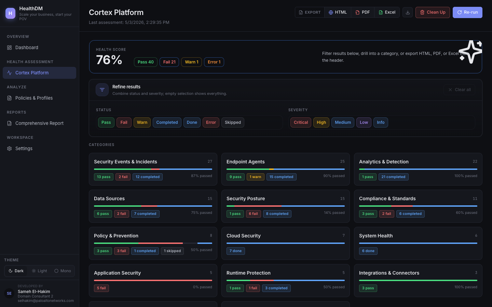
3. Cortex Platform assessment
The Cortex Platform page is the core of HealthDM. It runs 151 health checks across 14 categories and shows an overall health score at the top.
3.1 Running and refreshing an assessment
The toolbar in the top-right of the page has two action buttons:
- Re-run — queues a full new assessment run against your configured Cortex connection. The page updates when the run finishes.
- Clean Up — clears stale cached run data.
Wait for the assessment to finish before exporting — the score and check counts update live as results come in. A running job is indicated in the UI progress area at the top of the page.
3.2 Reading the health score
Below the toolbar you see the overall health score (e.g. 76%) alongside a breakdown: Pass Fail Warn Error Completed. These counters reflect the current run across all 151 checks.
3.3 Filtering results
The Refine results panel lets you narrow which category tiles are shown. There are two independent rows of toggle buttons:
- Status — Pass, Fail, Warn, Completed, Done, Error, Skipped
- Severity — Critical, High, Medium, Low, Info
Click one or more buttons to activate them; the category tiles below update instantly to show only categories that contain matching checks. Click Clear all to reset. Leaving all buttons unselected shows everything.
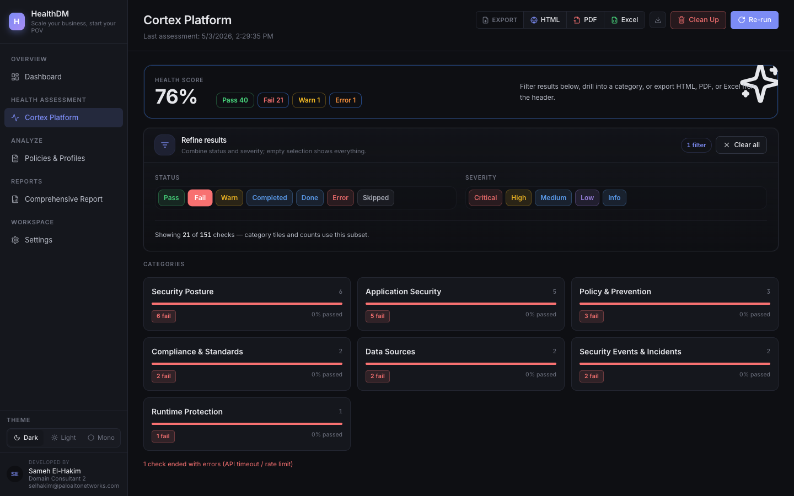
3.4 Exporting results
Three export formats are available from the toolbar: HTML PDF Excel. All three open the same selection modal — only the output format differs.
- Click the format button (e.g. HTML) in the top toolbar. The export modal opens.
-
Use the quick-filter pills at the top of the modal to seed your selection:
- All — selects every check (default)
- With Findings — selects checks that have any result data
- Failed + Warning — selects only failed and warned checks
- Critical + High — selects only critical and high severity checks
- The checks are grouped by category (e.g. Endpoints 25/25). Click the ▾ arrow to expand a group and see individual checks with their severity, status, and count. Use the Clear group button to deselect an entire category at once.
- Tick or untick individual checkboxes to fine-tune the selection. The Export N button at the bottom shows how many checks are included.
- Click Export N to download the file. Click Cancel to close without exporting.
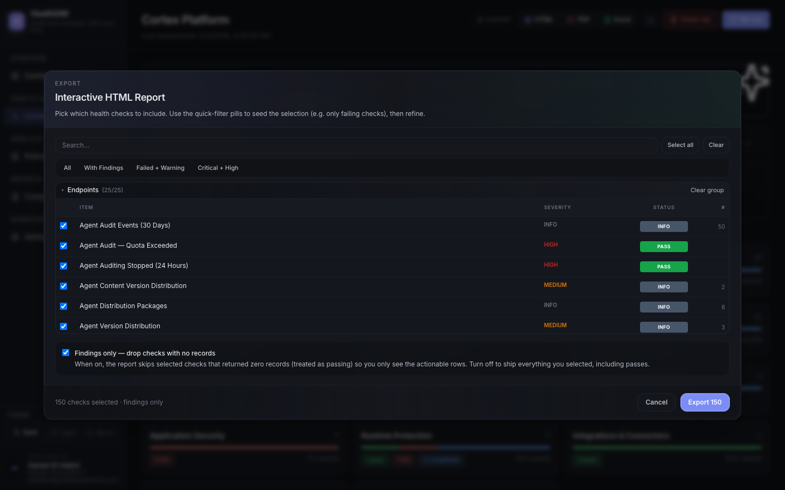
4. Drilling into a category
Click any category tile on the Cortex Platform page to open the category detail view. This shows every individual check in that category, with its own status and severity.
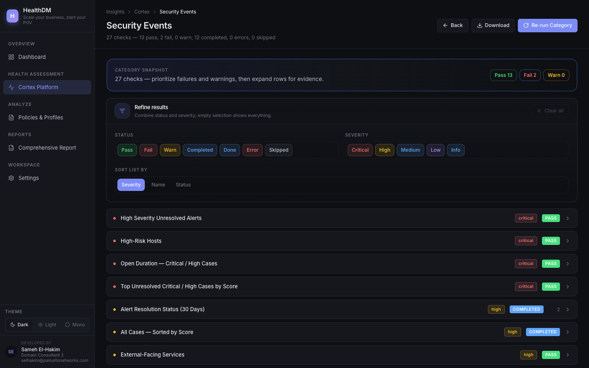
What's on the category page
- Breadcrumb — Insights → Cortex → Category Name. Click Cortex to go back to the overview.
- Category snapshot — Pass / Fail / Warn counters for this category only.
- Refine results — same Status + Severity filter toggles as the overview, scoped to this category.
- Download — exports this category's checks only (same modal flow as the overview export).
- Re-run Category — re-runs only the checks in this category without triggering a full assessment.
Use Re-run Category after fixing an issue to confirm it resolved without waiting for a full 151-check run.
5. Dashboard
The Dashboard gives you an executive-level view that combines the Cortex health assessment results with Policies & Profiles compliance in one place. Use it for a quick status check before diving into details.
5.1 Overview tab
The default tab shows:
- Health score — current score (e.g. 76), letter grade, and stability label.
- Check distribution — Passed / Failed / Warnings / Completed totals.
- Top recommendations — the highest-priority failures from the latest run, sorted by criticality.
- Health Score % and Policy Score % — separate tiles for each dimension.
- Open Failures — combined count of health + policy failures.
- Critical Severity — count of critical-level findings across both health and policy.
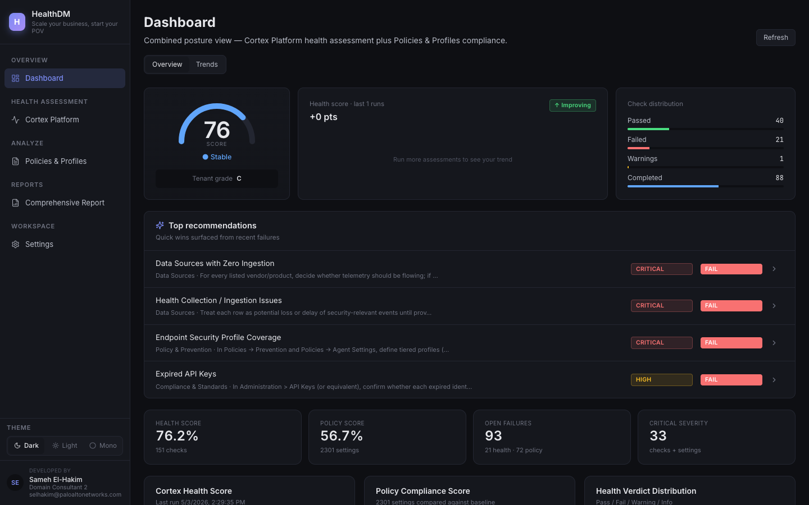
5.2 Trends tab
Click the Trends tab to switch to the historical view. This shows:
- Latest Score — score and timestamp of the most recent completed run.
- Score Change — point change compared to the previous run.
- Open Findings — current open findings count, with change since prior run.
- Regressions — checks that previously passed but now fail.
- Score History chart — line chart of the overall health score over time (x-axis = date, y-axis = 0–100%).
- Category Trends — per-category trend breakdown.
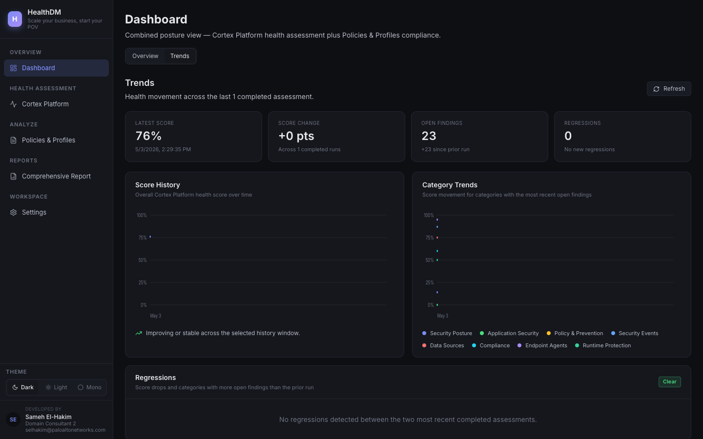
Click Refresh (top-right of the Dashboard page) to reload the latest data at any time.
6. Policies & Profiles
The Policies & Profiles page lets you import Cortex .export bundles (prevention policies and extension policy rules), compare them against your configured baselines, and generate policy-scoped reports.
6.1 Importing a policy bundle
- Navigate to Analyze → Policies & Profiles in the sidebar.
- Drag and drop a Cortex
.exportfile onto the import zone, or click inside it to open a file picker. - The app parses the bundle, stores it, and compares it against the configured baselines automatically.
- The imported bundle appears in the list with its comparison score and per-rule status.
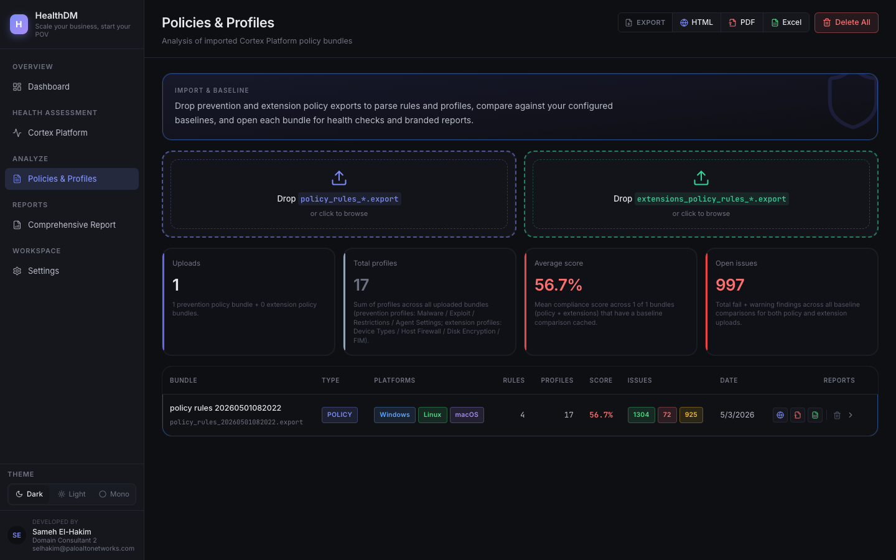
6.2 Exporting a policy report
Three export formats are available from the toolbar: HTML PDF Excel. The export modal lets you choose which profiles (not individual checks) to include.
- Click the format button (e.g. HTML) in the toolbar. The export modal opens.
- Use the filter pills to seed your selection: Select all / Clear / All / With Findings / Failed + Warning / Critical + High.
- Profiles are grouped by type — EXPLOIT, MALWARE, RESTRICTIONS, POLICY_RULE, AGENT_SETTINGS, EXCEPTIONS. Click ▾ to expand a group and see individual profiles with their severity and status.
- Tick or untick profiles as needed. The Export N button reflects the current selection count.
- Click Export N to download.
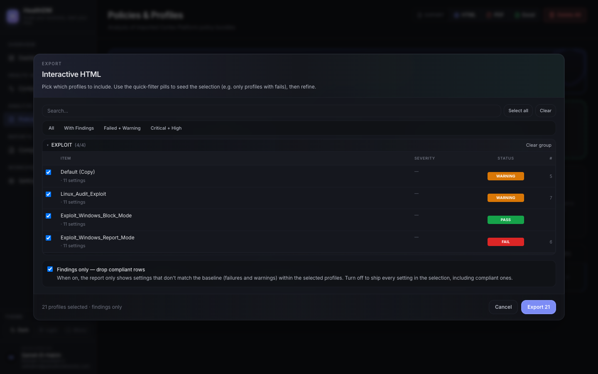
Delete All (toolbar, far right) removes every imported bundle permanently. Use with caution — there is no undo.
7. Comprehensive report
The Comprehensive Report page combines Cortex health-check results and policy/profile data into a single export. It is the most complete output HealthDM produces and is the recommended format for customer deliverables.
Four export formats are offered side-by-side:
| Button | Output | Best used for |
|---|---|---|
| HTML | Interactive HTML file | Sharing via browser; clickable, searchable |
| DOCX | Word document | Editable deliverables, customer-facing reports |
| XLSX | Excel spreadsheet | Data analysis, pivot tables |
| PDF document | Printable, read-only deliverables |
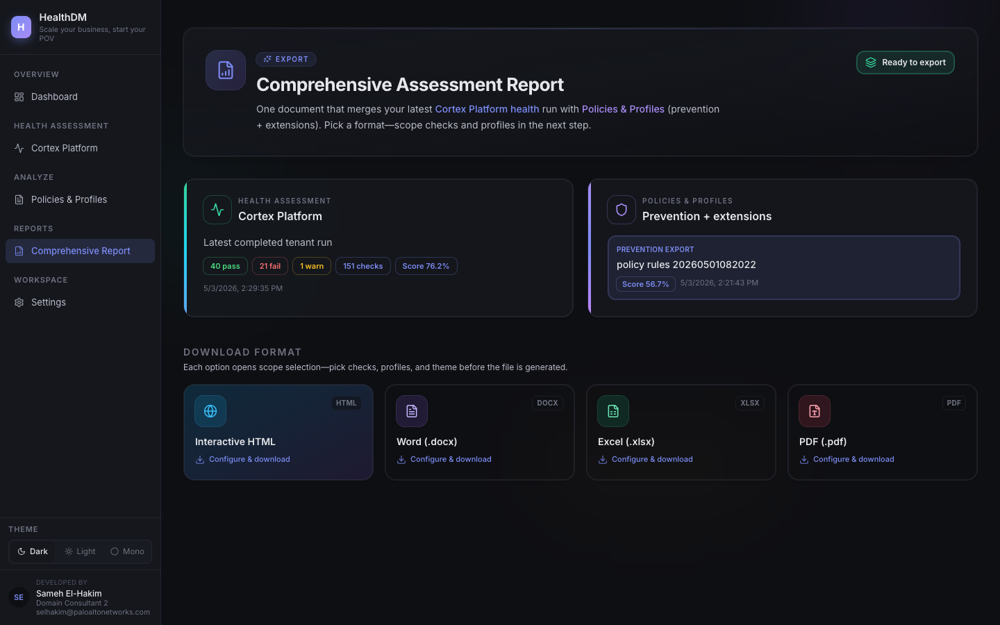
7.1 How to export a comprehensive report
All four format buttons open the same export modal with two independent sections — Health Checks and Policy Profiles. You configure each side separately.
- Click a format button — e.g. HTML. The export modal opens.
-
Health Checks section (top half of modal):
Use the filter pills to seed the selection:- Select all — includes all 151 checks
- Clear — deselects everything
- With Findings — only checks that returned data
- Failed + Warning — only failed or warned checks
- Critical + High — only critical and high severity checks
-
Policy Profiles section (bottom half of modal):
Scroll down in the modal to reach the policy profiles. The same filter pills apply here. Profiles are grouped as: EXPLOIT, MALWARE, RESTRICTIONS, POLICY_RULE, AGENT_SETTINGS, EXCEPTIONS. Expand each group to include or exclude specific profiles. - The Export N button at the bottom of the modal shows the combined selection count — click it to generate and download the file.
- Click Cancel at any time to close without exporting.
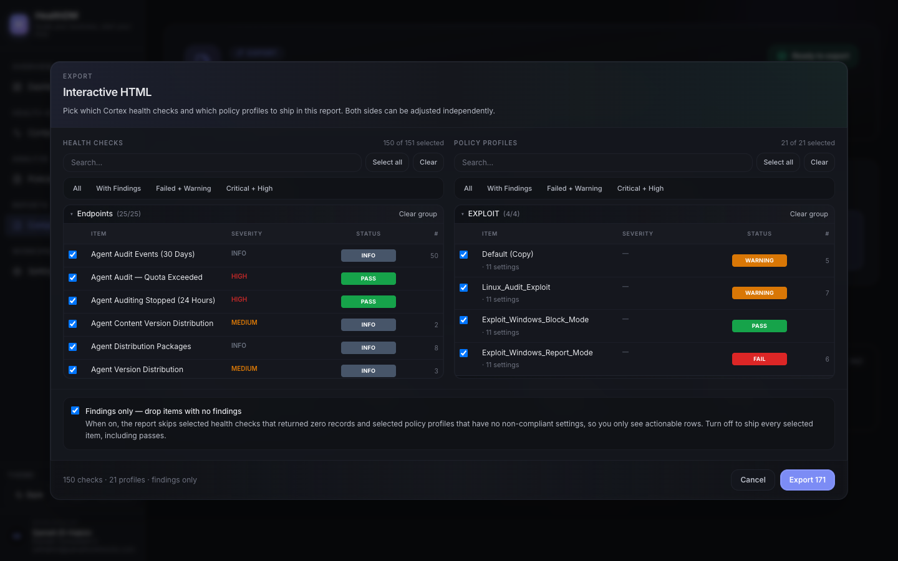
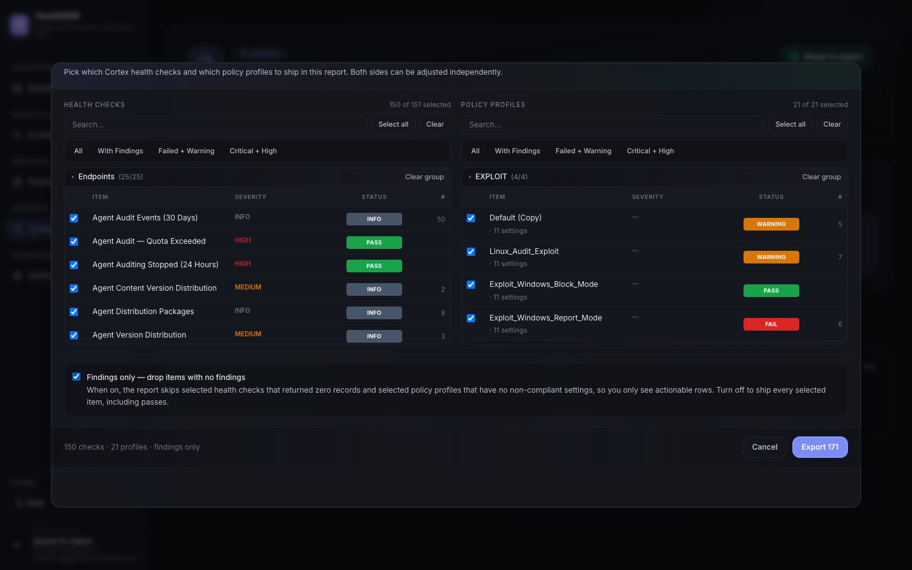
For a focused executive report, use Failed + Warning on the Health Checks side and With Findings on the Policy Profiles side — this keeps the document concise and action-oriented.
8. Settings — Cortex Platform Credentials
Open Workspace → Settings in the sidebar. The settings area has five tabs in a left panel. Cortex Platform Credentials is the first tab and the one you need to fill in before anything else works.
Fields
- API URL — your Cortex XSIAM tenant base URL, e.g.
https://api-yourtenant.xdr.us.paloaltonetworks.com - API Key — your Cortex API key. Leave blank to keep an existing saved key.
- Auth ID — the Auth ID associated with your API key. Leave blank to keep an existing saved value.
- Enter your API URL, API Key, and Auth ID.
- Click Save. The status indicator at the top of the tab shows ● Connected once credentials are accepted.
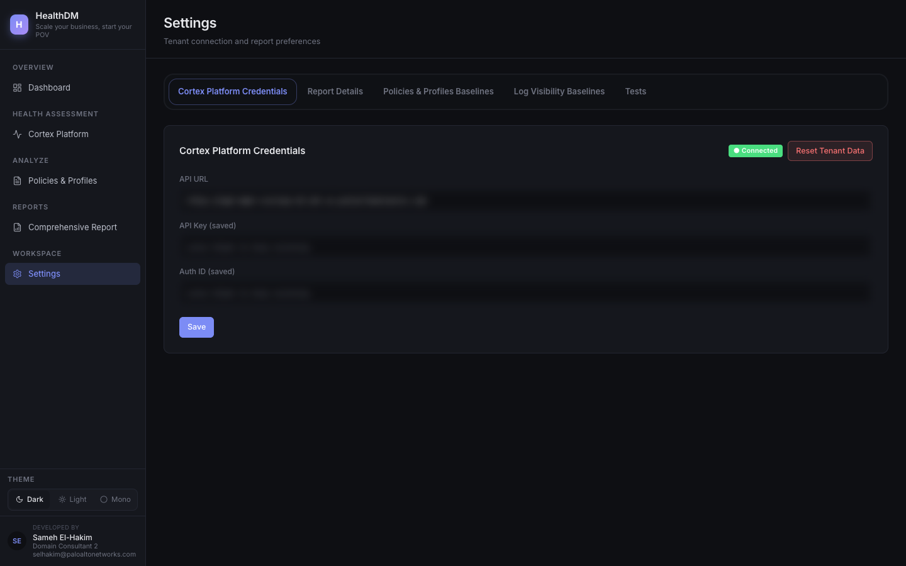
Reset Tenant Data (red button at the bottom of the tab) wipes all stored assessment data for the current tenant. This cannot be undone — only use it when starting fresh with a new tenant.
9. Settings — Report Details
Click the Report Details tab in the Settings left panel. These fields populate the dynamic placeholders embedded in every generated report — customer name, consultant details, and tenant identifiers. Fill them in once and they are reused across all export formats.
Fields
| Field | Placeholder in reports | Example |
|---|---|---|
| Customer Name | {CUSTOMER_NAME} | Acme Corp |
| Cortex Project ID | {CORTEX_PROJECT_ID} | PRJ-00123 |
| Cortex ID | {CORTEX_ID} | tenant-id-here |
| Cortex URL | {CORTEX_URL} | https://your-tenant.xdr.eu… |
| Consultant Name | {CONSULTANT_NAME} | Jane Smith |
| Consultant Title | {CONSULTANT_TITLE} | Domain Consultant |
| Consultant Email | {CONSULTANT_EMAIL} | jane@example.com |
Fill in the fields and click Save. The report date is populated automatically at generation time.
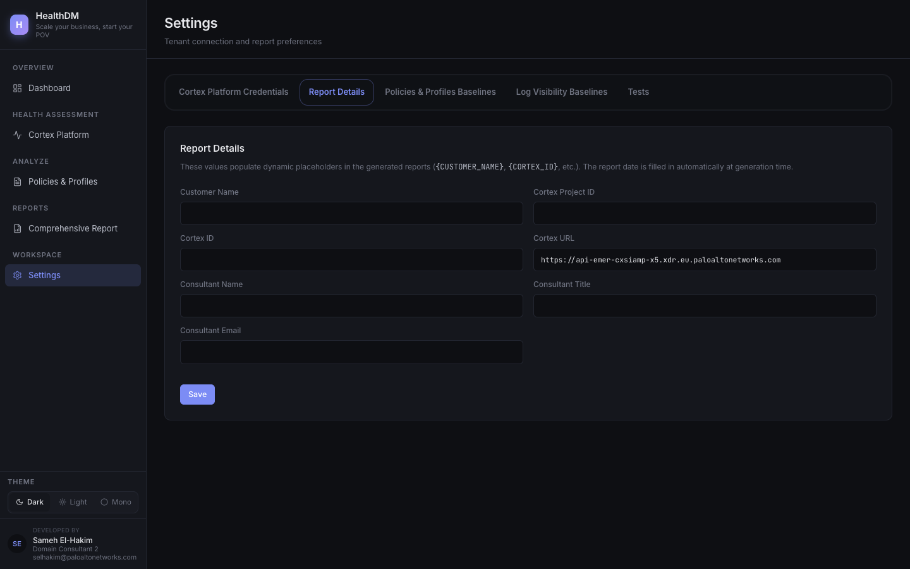
10. Settings — Policies & Profiles Baselines
Click the Policies & Profiles Baselines tab. Baselines are the reference .export files that imported policy bundles are compared against. Upload one per operating system to override the built-in defaults.
Prevention Baselines
One baseline file per platform: Windows, macOS, Linux, Android, iOS/iPadOS. Each card explains exactly how to obtain the file from Cortex XSIAM (Endpoints → Policy Management → Profiles → Export).
Extension Policy Baselines
Separate baseline files for Extension Policy Rules, currently supporting Windows. The card shows whether you are using the combined built-in baseline or a custom upload.
- Click the platform card you want to update (e.g. Windows).
- Click inside the upload area or drag a
.exportfile onto it. - The baseline is saved immediately — no separate Save button is needed.
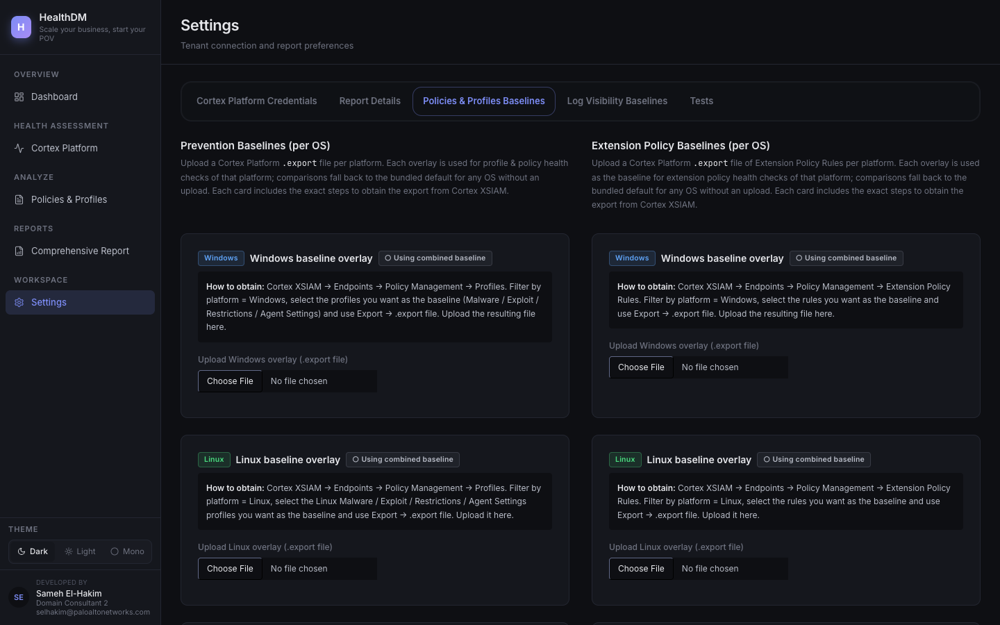
11. Settings — Tests
Click the Tests tab. This is where you control which health checks run in future assessments and what severity level each check uses.
The tab shows a summary badge at the top — e.g. 117 enabled 34 disabled — so you can see your current configuration at a glance.
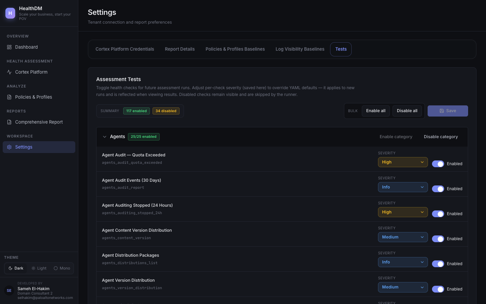
11.1 Enabling and disabling tests
You can enable or disable tests at three levels:
| Level | How | Effect |
|---|---|---|
| All tests | Click Enable all or Disable all at the top of the page | Turns every check on or off in one click |
| Category | Click Enable category or Disable category next to the category heading | Turns all checks in that group on or off |
| Individual check | Toggle the checkbox on the right side of any test row | Turns that single check on or off |
Disabled checks are not deleted — they remain visible in results as Skipped and are simply not executed during the next run.
11.2 Changing a test's severity
Every check has a severity dropdown in its row. The default comes from the YAML configuration, but you can override it here per-check. Changing severity affects how the check is weighted in scores, how it appears in export filters (e.g. the Critical + High pill), and how it shows in results.
- Find the check whose severity you want to change. You can scroll through the list or use your browser's Ctrl+F to search by name.
- Click the severity dropdown in that row — options are Critical, High, Medium, Low, Info.
- Select the new severity level.

11.3 Saving your changes
After making any combination of enable/disable changes or severity overrides, click Save at the top of the Tests tab. Changes take effect on the next assessment run — they do not retroactively alter existing results.
The test slug shown under each name (e.g. agents_audit_quota_exceeded) is the YAML identifier — useful for referencing checks in custom scripts or when asking for support.
12. Theme switcher
The three theme buttons at the bottom of the sidebar — Dark Light Mono — change the app's colour scheme. The selection persists across page navigation and browser reloads. No restart is required; the change is instant.